cutoff.pred <- function(fitmodel, dataset, values, plot = T) {
pred.t <- predict(fitmodel, newdata = dataset)
thresh <- seq(0.01, 0.99, by = 0.01)
TPR <- {}
FPR <- {}
for(t in thresh){
classes.t <- pred.t$class
per.t <- modelAssessment( values, classes.t)
TPR <- c(TPR, per.t$TPR)
FPR <- c(FPR, per.t$FPR)
}
return(list(TPR, FPR))
}Homework week 6 - Assigment 4
Question 1:
In a QDA model observation within each class are assumed to be drawn from a normal distribution with class specific means and class specific variances. Suppose we have a single predictor \(X\) (i.e., \(p = 1\)). If we have \(K\) classes, \(X \sim \mathcal{N}(\mu_k, \sigma_k)\), for \(k = 1, \cdots, K\). Show that the decision boundary function \(\delta_{k}(x)\) is quadratic in \(x\).
Consider 1 dimension \(X \sim \mathcal{N}(\mu_k, \sigma_k)\) \[ f(x) = \dfrac{1}{\sqrt{2 \pi} \sigma^2} e^{- \dfrac{(x - \mu_k)^2}{2\sigma_k^2}} \]
I would calculate one covariance matrix per class. I mean, \(\sum_k\).
then, assuming I calculate every posterior, I will choose the class with the largest posterior in order to get the decision function.
$$
\[\begin{aligned} d(x) &= e^{- \dfrac{(x - \mu_k)^2}{2\sum_k}} . \pi_k \\ &= \log \left(e^{- \dfrac{(x - \mu_k)^2}{2\sum_k}} \right) + \log(\pi_k)\\ &= -\left[\dfrac{(x - \mu_k)^2}{2\sum_k}\right] + \log(\pi_k)\\ &= -\left[\dfrac{1}{2}(x - \mu_k)^2\sum_k^{-1} \right] + \log(\pi_k)\\ &= -\left[\dfrac{1}{2}(x^2 - 2x\mu_k + \mu_k^2)\sum_k^{-1} \right] + \log(\pi_k)\\ \end{aligned}\]$$
Question 2:
Let \(X_1, \cdots, X_n\) be i.i.d random variables with mean \(\mu\) and variance \(\sigma^2\) and let \(\bar{X} = \dfrac{1}{n} \sum_{i = 1}^n X_i\). Show that \(E[\bar{X}] = \mu\) and \(Var(\bar{X} ) = \sigma^2/n\). The random variable \(S^2 = \dfrac{1}{n-1} \sum_{i = 1}^{n} (X_i - \bar{X})^2\) is called the sample variance. Show that \(E[S^2] = \sigma^2\). Can you show that \(\bar{X}\) and \(S^2\) are independent (the last part is optional).
Question 3:
Write an ‘R’ function to compute the FPR and TPR for binary QDA and LDA models at different values of cutoff threshold. Note that the threshold is determined by the prior class probabilities.
Question 4:
This question involves the development of a classification model to predict whether a given car gets higher or lower bass milage based on the Auto data. For this problem use appropriate predictors (e.g, Auto names should not be used.)
1. Perform a summary statistics on the variables.
library(tidyverse)── Attaching core tidyverse packages ──────────────────────── tidyverse 2.0.0 ──
✔ dplyr 1.1.3 ✔ readr 2.1.4
✔ forcats 1.0.0 ✔ stringr 1.5.0
✔ ggplot2 3.4.3 ✔ tibble 3.2.1
✔ lubridate 1.9.2 ✔ tidyr 1.3.0
✔ purrr 1.0.2
── Conflicts ────────────────────────────────────────── tidyverse_conflicts() ──
✖ dplyr::filter() masks stats::filter()
✖ dplyr::lag() masks stats::lag()
ℹ Use the conflicted package (<http://conflicted.r-lib.org/>) to force all conflicts to become errorslibrary(ISLR)
library(MASS)
Attaching package: 'MASS'
The following object is masked from 'package:dplyr':
selectrequire(klaR)Loading required package: klaRrequire(pracma)Loading required package: pracma
Attaching package: 'pracma'
The following object is masked from 'package:purrr':
crossdata(Auto)
head(Auto) mpg cylinders displacement horsepower weight acceleration year origin
1 18 8 307 130 3504 12.0 70 1
2 15 8 350 165 3693 11.5 70 1
3 18 8 318 150 3436 11.0 70 1
4 16 8 304 150 3433 12.0 70 1
5 17 8 302 140 3449 10.5 70 1
6 15 8 429 198 4341 10.0 70 1
name
1 chevrolet chevelle malibu
2 buick skylark 320
3 plymouth satellite
4 amc rebel sst
5 ford torino
6 ford galaxie 500summary(Auto) mpg cylinders displacement horsepower weight
Min. : 9.00 Min. :3.000 Min. : 68.0 Min. : 46.0 Min. :1613
1st Qu.:17.00 1st Qu.:4.000 1st Qu.:105.0 1st Qu.: 75.0 1st Qu.:2225
Median :22.75 Median :4.000 Median :151.0 Median : 93.5 Median :2804
Mean :23.45 Mean :5.472 Mean :194.4 Mean :104.5 Mean :2978
3rd Qu.:29.00 3rd Qu.:8.000 3rd Qu.:275.8 3rd Qu.:126.0 3rd Qu.:3615
Max. :46.60 Max. :8.000 Max. :455.0 Max. :230.0 Max. :5140
acceleration year origin name
Min. : 8.00 Min. :70.00 Min. :1.000 amc matador : 5
1st Qu.:13.78 1st Qu.:73.00 1st Qu.:1.000 ford pinto : 5
Median :15.50 Median :76.00 Median :1.000 toyota corolla : 5
Mean :15.54 Mean :75.98 Mean :1.577 amc gremlin : 4
3rd Qu.:17.02 3rd Qu.:79.00 3rd Qu.:2.000 amc hornet : 4
Max. :24.80 Max. :82.00 Max. :3.000 chevrolet chevette: 4
(Other) :365 1.Create a binary variable `mpg01`, that contains $1$ if mpg value is above the median, and $0$ if mpg is below the median. You may use `data.frame()` function to create a new data set with the binary response `mpg01` and other appropriate predictors.
auto2 <- Auto |> mutate( mpg01 = ifelse(mpg >= 22.75,1,0 ))2. Explore the data graphically. Color code the points based on response. Which predictor seems most associated with `mpg01`
ggplot(auto2, aes(y= mpg, x = cylinders)) +
geom_point(aes(color= as.factor(mpg01)))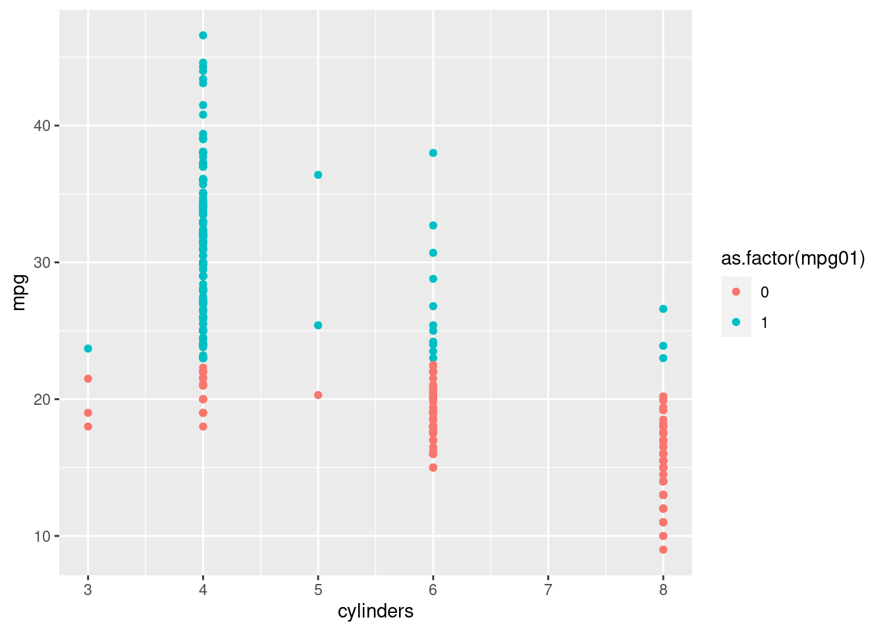
ggplot(auto2, aes(y= mpg, x = displacement)) +
geom_point(aes(color= as.factor(mpg01)))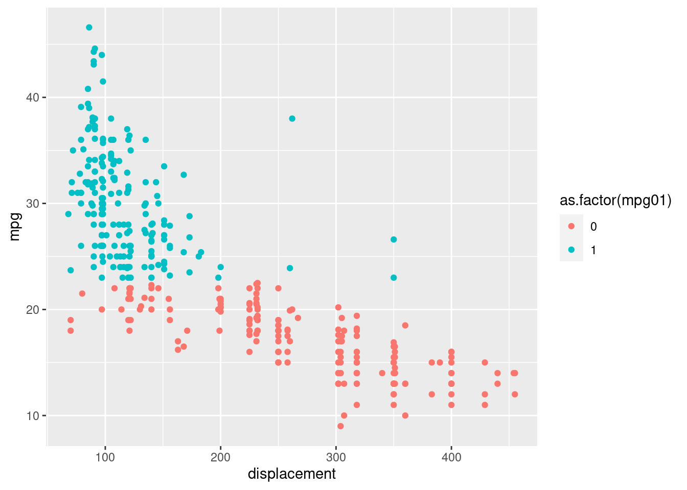
ggplot(auto2, aes(y= mpg, x = horsepower )) +
geom_point(aes(color= as.factor(mpg01)))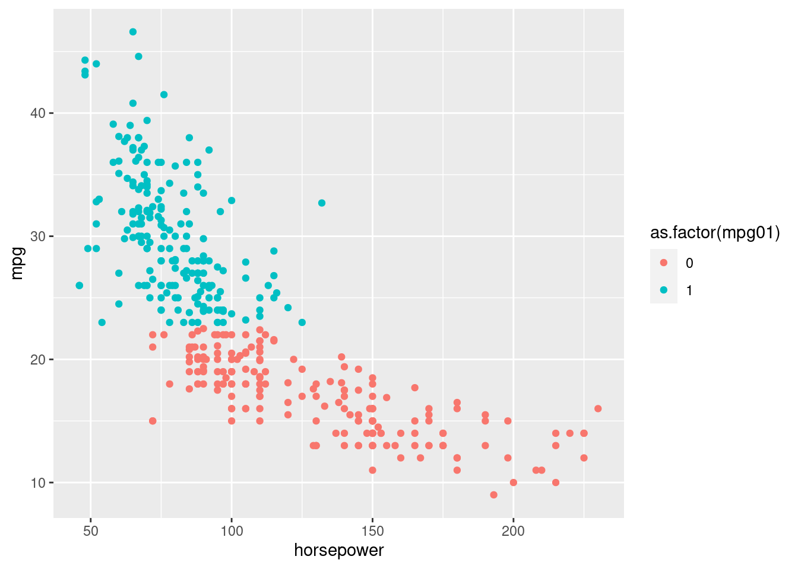
ggplot(auto2, aes(y= mpg, x = weight )) +
geom_point(aes(color= as.factor(mpg01)))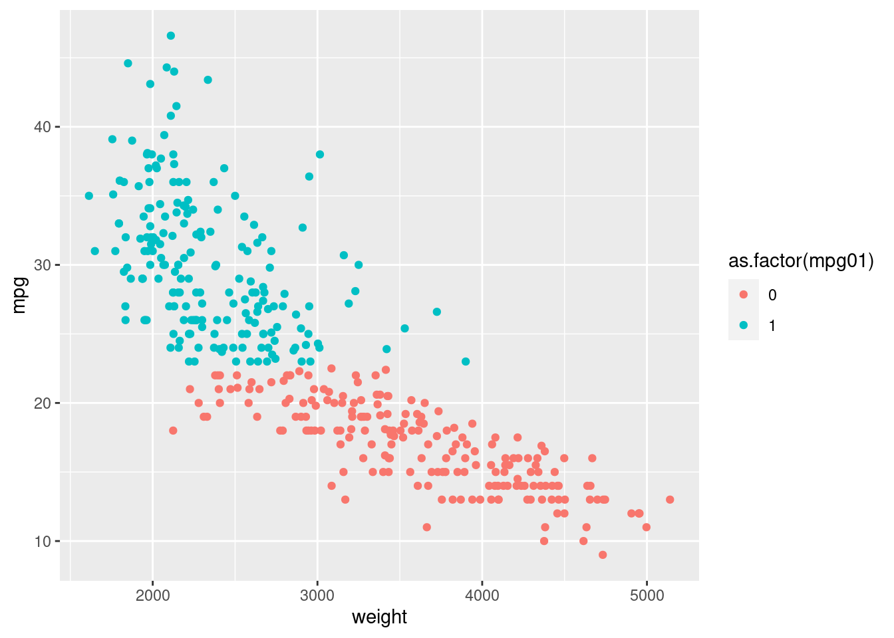
ggplot(auto2, aes(y= mpg, x = acceleration )) +
geom_point(aes(color= as.factor(mpg01)))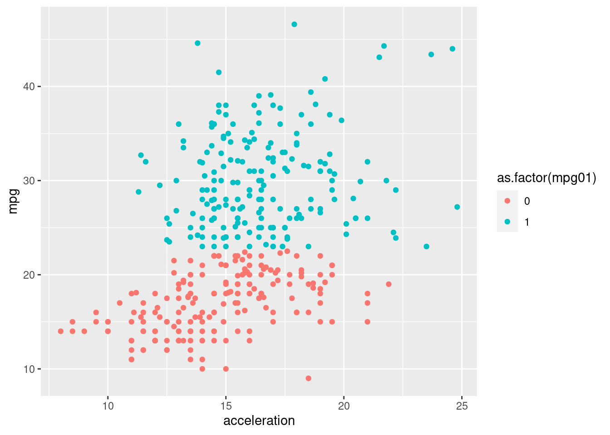
ggplot(auto2, aes(y= mpg, x = year)) +
geom_point(aes(color= as.factor(mpg01)))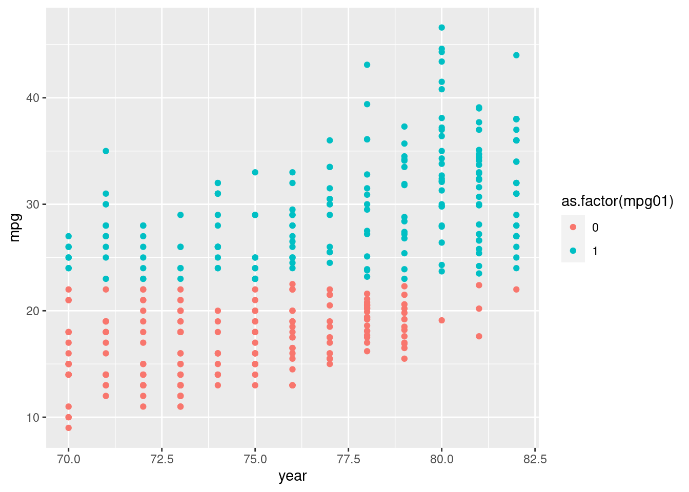
ggplot(auto2, aes(y= mpg, x = origin )) +
geom_point(aes(color= as.factor(mpg01)))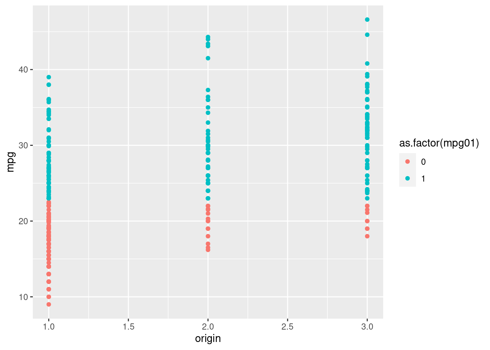
ggplot(auto2, aes(y= mpg, x = name )) +
geom_point(aes(color= as.factor(mpg01)))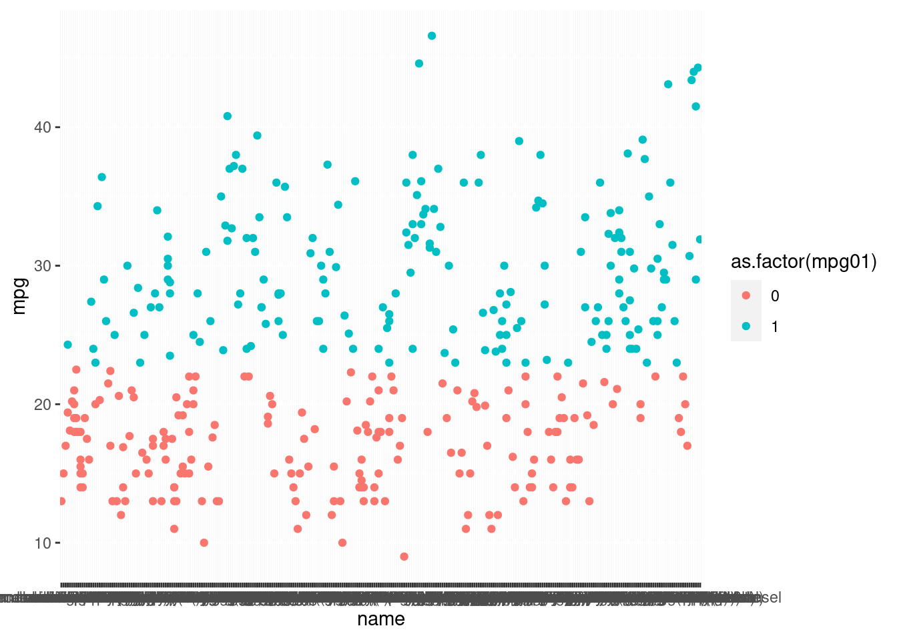
3. Split the data randomly to train and test sets (use $2/3$ of the data from training and $1/3$ for testing. You can use `sample()` function to randomly select the indices.)
lenght.Test <- ceiling(nrow(auto2)* 0.33)
lenght.Train <- nrow(auto2)- lenght.Test
row.test <- sample(1: nrow(auto2), lenght.Test, replace = F)
auto.test <- auto2[row.test,]
auto.train <- auto2[-row.test,]4. Perform LDA on the training data in order to predict `mpg01` on the test set. You will need to use the `newdata` argument in the `predict()` function. What is the test error rate? Plot the ROC curve and compute the AUC.
modelAssessment <- function(obs, pred){
TP <- length(which(obs == 1 & pred == 1))
TN <- length(which(obs != 1 & pred != 1))
FP <- length(which(obs != 1 & pred == 1))
FN <- length(which(obs == 1 & pred != 1))
sens <- TP / (TP + FN)
spec <- TN / (FP + TN)
accu <- (TP + TN) / (TP + TN + FP + FN)
TPR <- sens
FPR <- 1 - spec
L <- list(sens = sens, spec = spec, accu = accu, TPR = TPR, FPR = FPR)
return(L)
}
colnames(auto2) [1] "mpg" "cylinders" "displacement" "horsepower" "weight"
[6] "acceleration" "year" "origin" "name" "mpg01" ## LDA
fit.lda <- lda(mpg01~displacement+horsepower, data = auto.train)
pred.lda <- predict(fit.lda, newdata= auto.train)
lda.lab <- pred.lda$class
lda.per <- modelAssessment(auto.train$mpg01,lda.lab)
### fit test using my fuction in the exercise 2
cutoff.pred <- function(fitmodel, dataset, values) {
pred.t <- predict(fitmodel, newdata = dataset)
thresh <- seq(0.01, 0.99, by = 0.01)
TPR <- {}
FPR <- {}
major <-apply(pred.t$posterior,1, max)
for(t in thresh){
classes.t <- ifelse( major >= t, 1, 0)
per.t <- modelAssessment( values, classes.t)
TPR <- c(TPR, per.t$TPR)
FPR <- c(FPR, per.t$FPR)
}
return(list(TPR = TPR, FPR = FPR))
}
cutoffVals <- cutoff.pred(fitmodel = fit.lda, dataset = auto.test, values = auto.test$mpg01 )
plot(cutoffVals$FPR, cutoffVals$TPR, type = 'l')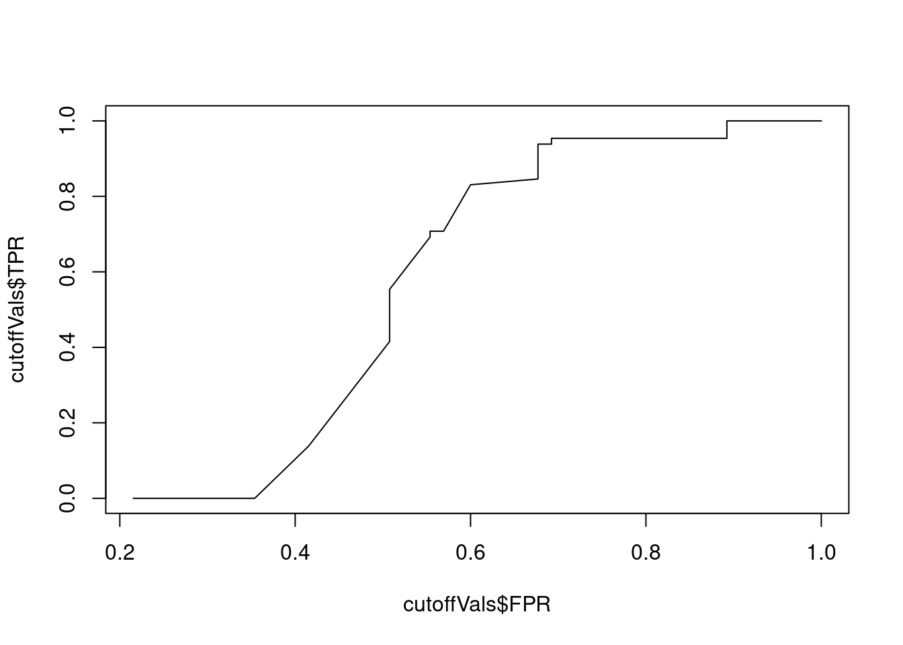
5. Perform QDA on the training data in order to predict `mpg01` on the test set. What is the test error rate? Plot the ROC curve and compute the AUC.
## QDA
fit.qda <- qda(mpg01~displacement+horsepower, data = auto.train)
pred.qda <- predict(fit.qda, newdata= auto.train)
qda.lab <- pred.qda$class
qda.per <- modelAssessment(auto.train$mpg01,qda.lab)
### fit test using my fuction in the exercise 2
cutoff.pred <- function(fitmodel, dataset, values) {
pred.t <- predict(fitmodel, newdata = dataset)
thresh <- seq(0.01, 0.99, by = 0.01)
TPR <- {}
FPR <- {}
major <-apply(pred.t$posterior,1, max)
for(t in thresh){
classes.t <- ifelse( major >= t, 1, 0)
per.t <- modelAssessment( values, classes.t)
TPR <- c(TPR, per.t$TPR)
FPR <- c(FPR, per.t$FPR)
}
return(list(TPR = TPR, FPR = FPR))
}
cutoffVals <- cutoff.pred(fitmodel = fit.qda, dataset = auto.test, values = auto.test$mpg01 )
plot(cutoffVals$FPR, cutoffVals$TPR, type = 'l')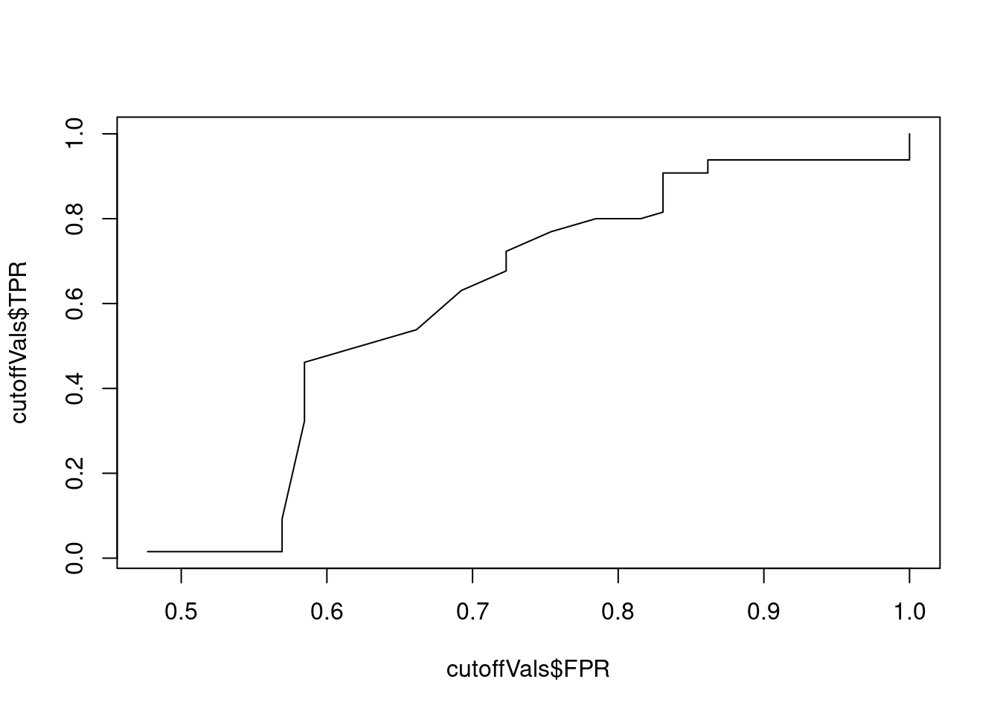
Perform a logistic regression on the training data in order to predict `mpg01` on the test set. Perform a summary statistic on the fit object. What are the important predictors if any? Plot the ROC curve and compute the AUC.
## Logistic regression
fit.logit <- glm(mpg01~displacement+horsepower, data = auto.train, family = 'binomial')
pred.logit <- predict(fit.logit, newdata = auto.train, type = 'response')
logit.lab <- ifelse(pred.logit >= 0.5, 1, 0)
logit.per <- modelAssessment(auto.train$mpg01, logit.lab)
### fit test using my fuction in the exercise 2
cutoff.pred <- function(fitmodel, dataset, values) {
pred.t <- predict(fitmodel, newdata = dataset, type = 'response')
thresh <- seq(0.01, 0.99, by = 0.01)
TPR <- {}
FPR <- {}
for(t in thresh){
classes.t <- ifelse( pred.t >= t, 1, 0)
per.t <- modelAssessment( values, classes.t)
TPR <- c(TPR, per.t$TPR)
FPR <- c(FPR, per.t$FPR)
}
return(list(TPR = TPR, FPR = FPR))
}
cutoffVals <- cutoff.pred(fitmodel = fit.logit, dataset = auto.test, values = auto.test$mpg01 )
plot(cutoffVals$FPR, cutoffVals$TPR, type = 'l')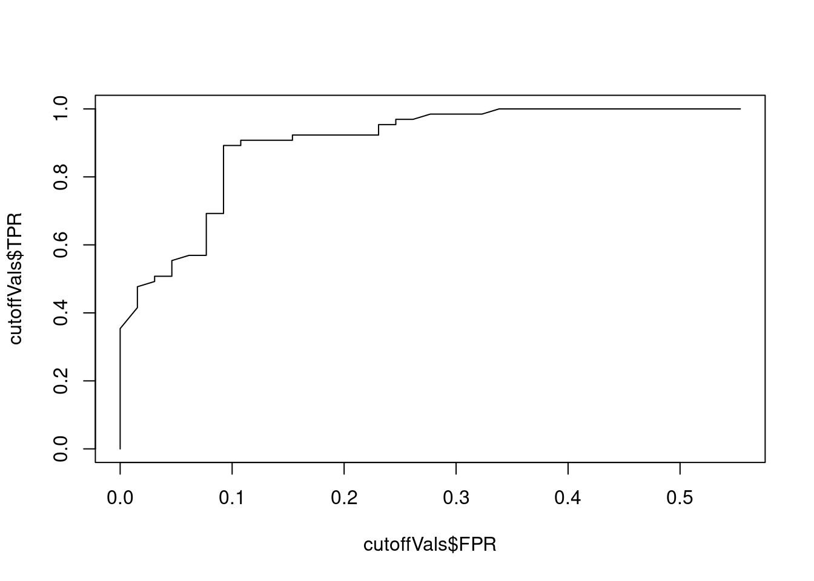